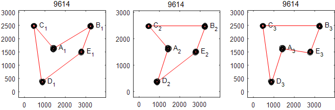
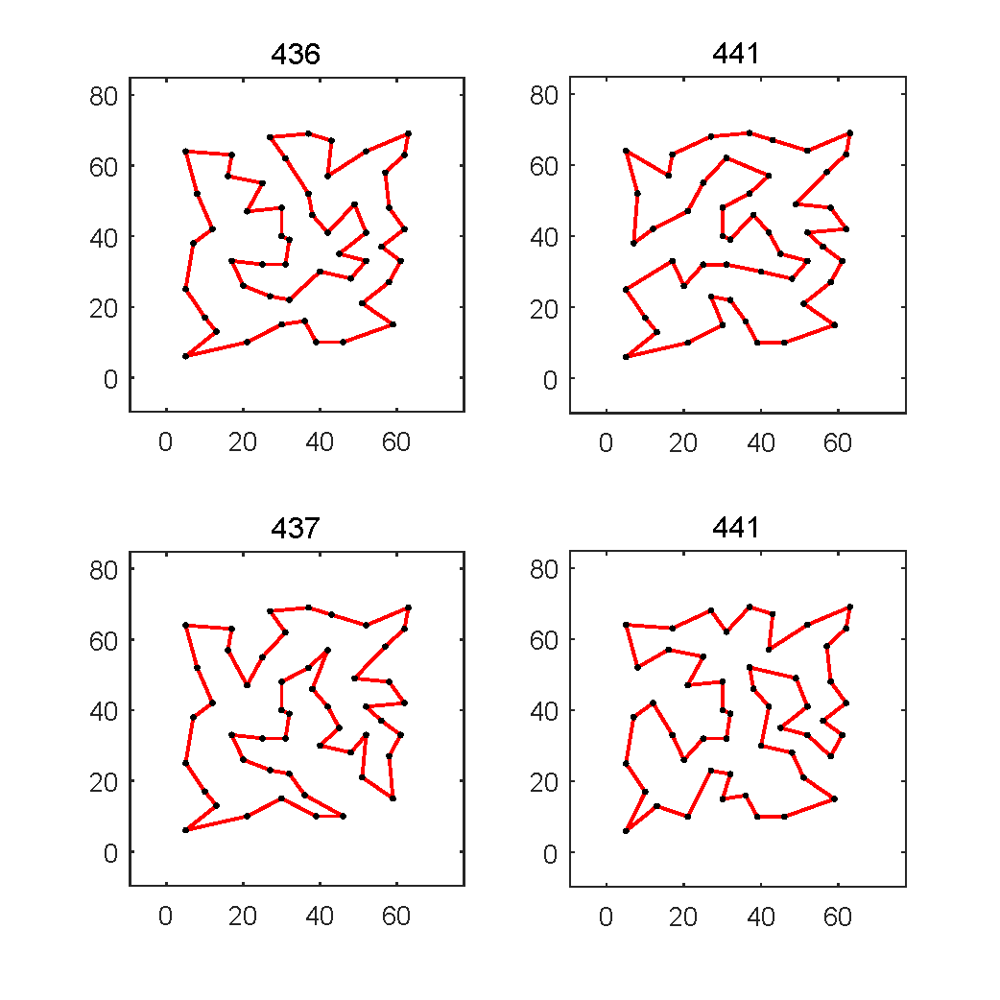

Multi-Solution Traveling Salesman Problem (MSTSP)
Abstract
Problems with multiple optimal solutions widely exist in the real world. In some applications, it is required to locate multiple optima. However, most studies are dedicated to the continuous multi-solution optimization, while few works contribute to the discrete multi-solution optimization. To promote the multi-solution research in the discrete area, we specify on Traveling Salesman Problem (TSP) and design a benchmark suite of TSP variant with multiple equally optimal solutions, namely MSTSP. To solve MSTSPs, we propose two algorithms: neighborhood-based genetic algorithm (NGA) and niching memetic algorithm (NMA). The experimental results validate the effectiveness of these two algorithms. Below you can find more details of our works. This page provides the data files of MSTSP benchmark and the source codes of NGA and NMA.
MSTSP Benchmark
Multi-solution Traveling Salesman Problem (MSTSP) is essentially a TSP, but the one with multiple optimal solutions. This benchmark includes 25 MSTSPs. The number of cities ranges from 9 to 66, and the number of optimal solutions ranges from 4 to 196. The algorithm adopted to tackle MSTSPs terminates when the maximum fitness evaluations (MaxFEs) are exhausted. To be specific, the MaxFEs are set as 6.00E+04 for MSTSP1-MSTSP12 and 1.20E+06 for MSTSP13-MSTSP25. Finally, the algorithm is required to provide a solution set. These candidate solutions are further evaluated with two indicators, i.e., $F_{\beta}$ and Diversity Indicator (DI). $F_{\beta}$ measures the solution quality, and DI measures the solution diversity.
Three categories of MSTSPs
Simple MSTSP
MSTSP4(simple4_11)
Geometry MSTSP
MSTSP7(geometry1_10)

MSTSP12(geometry6_15)
Composite MSTSP

MSTSP24(composite12_60)
subtours of MSTSP24
Avaible source
- Data file of the MSTSP benchmark
- Demo code (MATLAB) on how to evaluate the solutions for MSTSP
TSPLIB-ms
Apart from the above MSTSP benchmark, an MSTSP optimizer can be further evaluated by the well-known TSPLIB. Many instances in TSPLIB possess multi-solution characteristics, but the previous studies using this test suite consider one global optimum only. We defined a subset of TSPLIB, named TSPLIB-ms, which contains eight instances with multiple good solutions: eil51, berlin52, st70, pr76, kroA100, lin105. The developers of MSTSP solvers are also suggested to test their algorithms on the TSPLIB-ms and provide the final solution set with superior and diverse solutions. To be specific, the provided solutions should meet the following two requirements. (1) The length is shorter than a certain threshold length: (1 + σ) × (the optimal tour length provided by the TSPLIB), where σ is set to 0.1. (2) The sharing distance (a similarity measure) between any two solutions should be smaller than λ x (the number of cities in this instance), where λ is set to 0.8. As an example, the representative solutions obtained by NMA on the st70 and eil51 are shown below.
The multi-solution of st70
|

The multi-solution of eil51
|
Data file of the TSPLIB-ms
Demo Works on MSTSP
1. Neighborhood-Based Genetic Algorithm (NGA)
T. Huang, Y. Gong and J. Zhang, “Seeking Multiple Solutions of Combinatorial optimization Problems: A Proof of Principle Study,” 2018 IEEE Symposium Series on Computational Intelligence (SSCI), Bangalore, India, 2018, pp. 1212-1218.To promote the multi-solution research in the discrete area, we design a benchmark test suite for multi-solution traveling salesman problems and propose two evaluation indicators. Further, in order to solve the problems, the genetic algorithm is incorporated with a niching technique defined in the discrete space, namely NGA. Experimental results demonstrate that the proposed algorithm outperforms the compared algorithm concerning the quality and diversity of obtained solutions.
The results in terms of $F_\beta$ and DI obtained by NGA on MSTSPs.
| MSTSP | MSTSP1 | MSTSP2 | MSTSP3 | MSTSP4 | MSTSP5 |
|---|---|---|---|---|---|
| $F_\beta$ | 0.973 | 0.959 | 0.935 | 0.932 | 0.846 |
| DI | 0.980 | 0.972 | 0.957 | 0.947 | 0.916 |
| MSTSP | MSTSP6 | MSTSP7 | MSTSP8 | MSTSP9 | MSTSP10 |
| $F_\beta$ | 0.877 | 0.769 | 0.578 | 0.974 | 0.969 |
| DI | 0.943 | 0.869 | 0.838 | 0.975 | 0.969 |
| MSTSP | MSTSP11 | MSTSP12 | MSTSP13 | MSTSP14 | MSTSP15 |
| $F_\beta$ | 0.949 | 0.331 | 0.096 | 0.172 | 0.416 |
| DI | 0.963 | 0.809 | 0.792 | 0.844 | 0.847 |
| MSTSP | MSTSP16 | MSTSP17 | MSTSP18 | MSTSP19 | MSTSP20 |
| $F_\beta$ | 0.054 | 0.044 | 0.031 | 0.007 | 0.000 |
| DI | 0.783 | 0.803 | 0.704 | 0.699 | 0.671 |
| MSTSP | MSTSP21 | MSTSP22 | MSTSP23 | MSTSP24 | MSTSP25 |
| $F_\beta$ | 0.000 | 0.000 | 0.000 | 0.000 | 0.000 |
| DI | 0.628 | 0.409 | 0.344 | 0.319 | 0.270 |
2. Niching Memetic Algorithm (NMA)
T. Huang, Y. Gong, S. Kwong, H. Wang and J. Zhang, “A Niching Memetic Algorithm for Multi-Solution Traveling Salesman Problem,” IEEE Transactions on Evolutionary Computation. DOI: 10.1109/TEVC.2019.2936440.This paper proposes a niching memetic algorithm (NMA). The proposed algorithm is characterized by a niche preservation technique to enable the parallel search of multiple optimal solutions; an adaptive neighborhood strategy to balance the exploration and exploitation; a critical edge-aware method to provide effective guidance to the reproduction; and a selective local search strategy to improve the search efficiency. The experimental results show that our algorithm outperforms other compared algorithms. Furthermore, the proposed algorithm is adopted to tackle problems from the well-known TSPLIB library to obtain a set of distinct but good solutions.
The results in terms of $F_\beta$ and DI obtained by NMA on MSTSPs.
| MSTSP | MSTSP1 | MSTSP2 | MSTSP3 | MSTSP4 | MSTSP5 |
|---|---|---|---|---|---|
| $F_\beta$ | 1.000 | 1.000 | 1.000 | 1.000 | 1.000 |
| DI | 1.000 | 1.000 | 1.000 | 1.000 | 1.000 |
| MSTSP | MSTSP6 | MSTSP7 | MSTSP8 | MSTSP9 | MSTSP10 |
| $F_\beta$ | 1.000 | 0.923 | 0.772 | 1.000 | 1.000 |
| DI | 1.000 | 0.945 | 0.898 | 1.000 | 1.000 |
| MSTSP | MSTSP11 | MSTSP12 | MSTSP13 | MSTSP14 | MSTSP15 |
| $F_\beta$ | 1.000 | 0.535 | 0.611 | 0.883 | 0.732 |
| DI | 1.000 | 0.871 | 0.922 | 0.981 | 0.932 |
| MSTSP | MSTSP16 | MSTSP17 | MSTSP18 | MSTSP19 | MSTSP20 |
| $F_\beta$ | 0.554 | 0.605 | 0.571 | 0.168 | 0.165 |
| DI | 0.926 | 0.944 | 0.932 | 0.865 | 0.865 |
| MSTSP | MSTSP21 | MSTSP22 | MSTSP23 | MSTSP24 | MSTSP25 |
| $F_\beta$ | 0.023 | 0.013 | 0.016 | 0.010 | 0.002 |
| DI | 0.834 | 0.816 | 0.829 | 0.811 | 0.747 |
The number of satisfactory solutions obtained by NMA on TSPLIB_ms.
| TSPLIB_ms | eil51 | berlin52 | st70 |
|---|---|---|---|
| No. Solution | 5.84 | 4.54 | 6.00 |
| TSPLIB_ms | pr76 | kroA100 | lin105 |
| No. Solution | 5.12 | 5.36 | 4.54 |
Contact
The School of Computer Science and Engineering, South China University of Technology, Guangzhou 510006, China.
Email: cshting [AT] mail.scut.edu.cn